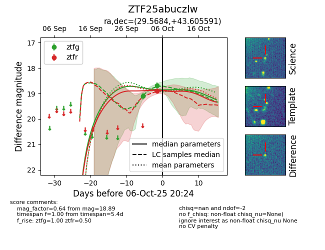
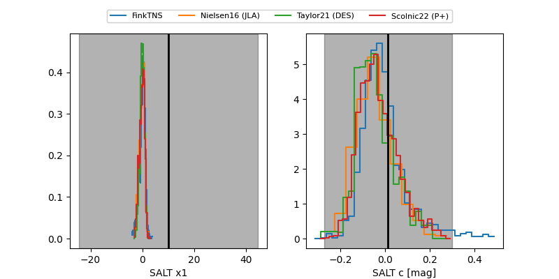

FINK: ZTF25abuczlw
Lasair: ZTF25abuczlw
ALeRCE: ZTF25abuczlw
ZTF25abuczlw (ztf,fink)
equatorial (ra, dec) = (29.5684,+43.60559)
galactic (l, b) = (135.5492,-17.62267)


last ztfg=18.69, ztfr=18.89
2 ztfg, 1 ztfr detections